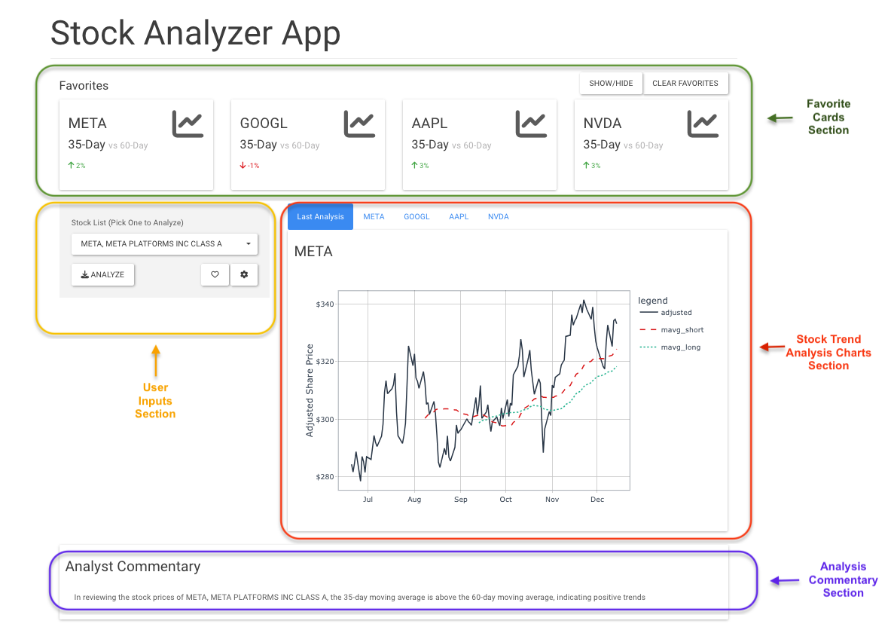

Introduction
In data science, the ability to transform complex analysis into interactive, user-friendly applications (also known as deployment) is crucial. R, with its vast ecosystem of packages including Shiny are important tools for creating such web applications. However, the journey from a concept to a production-grade application involves more than just developing the core analytical features. It requires a robust architecture that ensures reliability, scalability, and security.
This project demonstrates how a combination of cutting-edge technologies can be used to deploy a stock analysis application that meets these production-grade standards.
Technologies Used
Tidyquant: The Analytical Core
Tidyquant, an R package, is the starting point in our application. It provides a comprehensive API for extracting stocks data and performing intricate financial analyses. Tidyquant integrates seamlessly with the R ecosystem, bringing financial modeling, performance measurement, and risk management capabilities to the table.
R and Shiny: The Frontend Duo
At the heart of our application’s user interface are R and Shiny. These are essential in converting complex data analyses into engaging and interactive visualizations and dashboards. Shiny’s reactivity and R’s analytical power create a dynamic environment where users can interact with the data in real-time, making it an ideal choice for data science applications.
Amazon EC2: Scalable Hosting
Amazon EC2 forms the backbone of our application hosting. It offers scalable computing capacity in the cloud, which is crucial for handling varying loads, ensuring that the application remains responsive and available, even during peak usage times.
MongoDB Atlas: Secure Credential Storage
MongoDB Atlas is used for managing and storing authentication credentials securely. Its role is critical in maintaining the security and integrity of user data, a paramount aspect for any application, especially those dealing with sensitive financial information. In addition to storing user credentials, MongoDB is also used to user settings in the application, allowing the user to save stock analysis and retrieve such analysis when the log in later on.
Docker: Ensuring Consistency through Containerization
Docker is used to containerize the application, encapsulating it in a package that includes everything needed to run it: code, runtime, system tools, libraries, and settings. Containerization with Docker ensures consistency across various development and deployment environments, streamlining the development and sharing process and mitigating the “it works on my machine” syndrome.
How To Use The Stock Analyzer App
Authentication/Login
You can access the app here. Use either user1 and pass1 or user2 and pass2 for login credentials.
UI Interface

Upon logging in, you’ll encounter the user interface with 4 main sections. See screenshot below.
Toggle Settings
Hit the settings icon to toggle user inputs. Here you’ll find settings for;
Short Moving Average (Days)- Number of days to calculate short rolling moving average. Max is 40 days.Long Moving Average (Days)- Number of days to calculate long rolling moving average. Max is 120 days.Time Window (Days)- The number of look back days for analyzing stocks. Max is
Once you have your ideal settings, hit Apply & Save to update the trend analysis in the main chart. Hit the settings icon again to hide the user inputs.
Adding New Favorite Stocks
To add a new favorite stock, first hit the Stock List drop down to select a new stock, then hit the heart icon to add it as favorite and create a new favorite card. Also hit the ANALYZE button to add the trend analysis for the new stock as the Last Analysis
Clearing Favorites
The user can clear favorites by either removing a single stock as favorite or removing all stocks currently listed as favorites. To do so, hit the CLEAR FAVORITES button. To remove a single stock, select the stock from the drop down list, then hit CLEAR SINGLE. to remove all stocks, just hit the CLEAR ALL FAVORRITES button. Hit EXIT when done.
Conclusion
In summary, this stock analysis application showcases how different technologies can be combined to build user-friendly data science tools. We’ve seen the analytical strength of Tidyquant and R, the engaging interfaces made possible by Shiny, and the stability and security from using Amazon EC2, MongoDB Atlas, and Docker. This project goes beyond just doing the analysis; it ensures that the application is easy to use, safe, and works well under different conditions. It’s a great example of how modern technology can be used to make complex data science accessible and practical for everyday use.